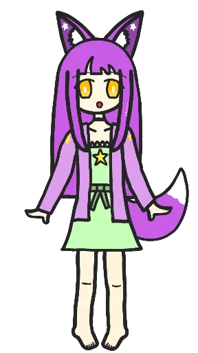

Sophia Fuchsia is a cute silly trans foxgirl who loves doing magic. She's the mascot of this site, and also the main protagonist of Stardust & Fox Ears.
Stardust & Fox Ears is a small little story I'm writing with Sophia as the main character! "A person, who got quite unlucky and feels trapped in a life she despises, gets visited by a magical creature, who invites her to become a witch. She turns into a foxgirl and starts visiting a magical academy, where she hopes she'll be able to start her life anew."
 back